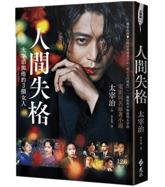
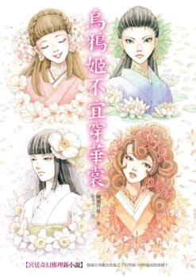
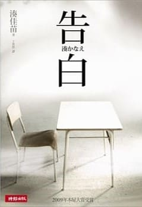

- 
- 

- 
-
書名：人間失格
作者：太宰治
簡介：1948年3月，太宰治開始執筆《人間失格》，並於5月12日完稿。一個月後的6月13日，太宰治與情人山崎富榮一同於玉川上水投河自殺。「我的一生充滿了恥辱。」
故事從一個男人在手記中的自白開始。他欺騙自己，也欺騙他人，犯下不可挽回的錯誤，並因此判定自己「失去了做為人類的資格」。但當他不在了之後，有位懷念他的女性卻這麼說道：「他是一個非常坦率……像神明一般的人。」
《人間失格》被視為太宰治的半自傳性作品，主角大庭葉藏即是以太宰治本人為原型。透過書中主角對自己一生諸多經歷的回顧，讓我們也不禁思考：一個人做為人活著的意義，究竟在哪裡？
購書連結：博客來
誠品線上
-
書名：嫌疑犯X的獻身
作者：東野圭吾
簡介：如果《解憂雜貨店》是展現人性光明面的「光」之神作，《嫌疑犯X的獻身》就是呈現人性幽暗面的「闇」之神作，也是「伽利略」系列最膾炙人口的代表作。
在本書中，東野圭吾徹底撕下「理系推理」的標籤，從對完美詭計的鑽研，進而探索「愛情」這個「不理性」的元素。東野也為湯川學創造了一個空前的勁敵，一個足以與他抗衡的數學天才。
兩人從洞察到破解，從破解到交鋒，宛如一場靜寂無聲的高手對弈。而在對決的尾聲，湯川終會面臨艱難的抉擇，而這也將永遠改變他眼中的世界……
購書連結：博客來
誠品線上
-
書名：烏鴉姬不宜穿華裳
作者：阿部智里
簡介：八咫烏一族的「宗家」皇太子要選妃，東南西北四大勢力各派出了一位候選人。因為姊姊出了天花，神經大條的東家二公主阿榭碧代姊上陣，乘著三腳烏鴉拖曳的飛車前往宮殿。
在櫻花宮，阿榭碧和帥氣的南家公主濱木綿、嬌豔動人的西家公主真赭薄、雪白高貴的北家公主白珠齊聚一堂，局面一觸即發！連公主身邊的嬤嬤及侍女們，在迴廊上擦身而過都能引爆火花！
突然出現的英俊男子、神秘的侍女失蹤事件、來路不明的信件、黑夜入宮的刺客……謎團接二連三。究竟是誰在阻撓選妃？背後又有什麼驚人內幕？
購書連結：誠品線上
(博客來沒有這本書)
-
書名：白雪公主殺人事件
作者：湊佳苗
簡介：知名化妝品公司美女職員三木典子的屍體在樹林裡被發現，她身中數十刀，還被淋上汽油燒成焦屍。典子的容貌姣好，宛如「白雪公主」一樣，一向是眾人追求的對象，到底是誰對她有這麼深的仇恨？
大家將懷疑的眼光指向與典子同期進入公司的城野美姬，認為長相平凡的她可能因為嫉妒典子的美貌才痛下殺手。而隨著「魔女」美姬失蹤，各種小道消息不斷擴散，網路熱烈討論，媒體持續報導，這場女人之間的「八卦」也逐漸脫序……
購書連結：博客來
誠品線上
-
書名：告白
作者：湊佳苗
簡介：
● 當倫理和正義分歧，你該選哪邊？
一位中學女老師在校園游泳池內發現自己的四歲女兒意外溺斃，後來經她私下調查，原來是班上兩位學生謀殺的，但殺人動機實在荒唐。
痛失愛女的老師辭職，不向警方申請重新調查，而在結業式那天向全班學生告白真相，並透露了她的復仇計畫，在學生們的心底種下恐懼的因子……
購書連結：博客來
誠品線上